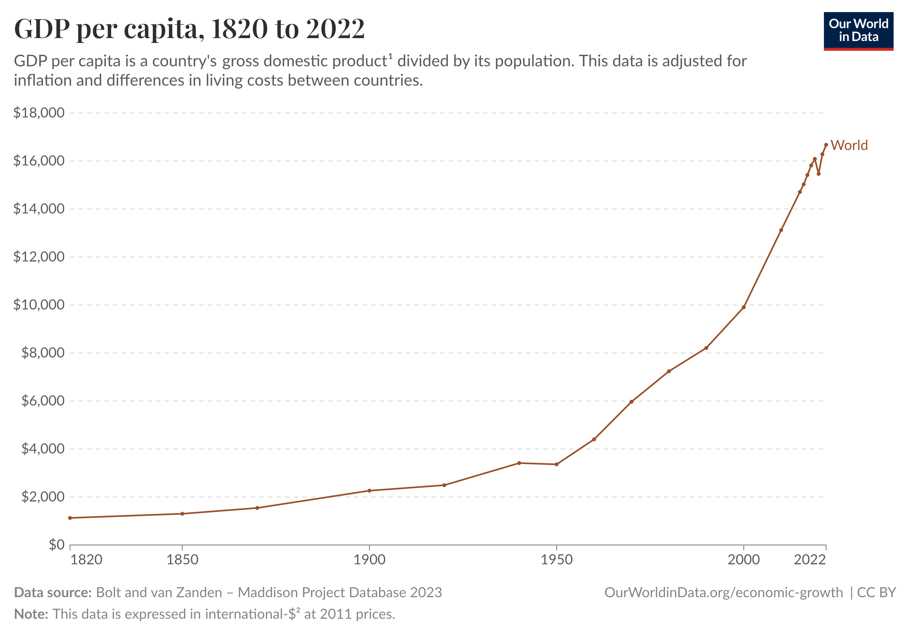

Tourism and (Urban) Economics
Università di Bologna, Rimini Campus, Economics of Tourism and Cities
![]()
Dear Students,
Dear Directors of the Study Programs,
My esteemed Colleagues,
Ladies and Gentlemen in the audience,
It’s a pleasure to share some thoughts with you today on the topic of Tourism and Economics in general - and Urban Economics in particular. Your study programs here at the Rimini campus of the University of Bologna provides you with excellent foundations to study this exciting intersection of topics, and I would like to congratulate the program directors for setting up and running this degree, and I would like to congratulate all of you on a good choice of study area.
I want to start this talk with a general overview of tourism in a historical perspective, so that we remind ourselves where the phenomenon originates. I want to then talk about the importance of tourism in a macroeconomic sense, so that we get an idea of the magnitudes which are at stake - which differ in different areas, but can be quite sizeable. This is certainly the case for Italy, but it is true in many other countries as well. From the macroeconomy, I will then zoom in on a few critical issues that have to do with mass tourism. I will consider in particular issues and tensions in Cities.
A Brief History of Tourism
Before our current epoch in human history, which I conveniently define to be post 1945, tourism was a fringe phenomenon limited to the rich elite. Kings and Emperors went on vacation, later on also some nobility. For instance, here is how a NYT article from 2008 describes what was called the Grand Tour (which was a thing around 1660-1840)
Three hundred years ago, wealthy young Englishmen began taking a post-Oxbridge trek through France and Italy in search of art, culture and the roots of Western civilization. With nearly unlimited funds, aristocratic connections and months (or years) to roam, they commissioned paintings, perfected their language skills and mingled with the upper crust of the Continent.

The Path to Mass Tourism
Nowadays, tourism is a mass phenomenon. Everybody knows what it is, and my guess that everybody in this room has made experiences over their lifetimes that we would call “tourism”. Let’s quickly look at the evolution fo this phenomenon over time, and how we went from vacations for kings to vacations for everyone.

- We can see that after WW2, tourism measured by international overnight stays was still in its infancy. This is partly due to very expensive airfares but mainly to few resources to spend on leisure in a world destroyed by war. People around the world were busy rebuilding their economies and livelihoods: They had no time, no money, and probably no interest to go on vacation.
- Then we see a gradual but constant increase in the amount of tourist trips. We can see how different destinations fared over time. Europe is the most sought after destination (that includes Europeans within Europe).
- The trend is nothing but striking. It is not difficult to imagine how to extend this graph to the right. Of course we all know what the graph looks like just 3 years out and into 2021, when the COVID19 pandemic reset tourism to a level of zero. Apart from such incidents, and looking at data like this, the UN World Tourism Organization estimated in 2004 that this would grow at an annual rate of 4%. We call this shape commonly exponential growth - each year we seem to outperform the growth from last year.
- This pattern reflects what we see in overall living standards across the globe.
- Let’s look at this:

So, it is fair to say that the advent of mass tourism is the result of two forces. On the on hand technological progress led to cheaper means of transport and a decline in travel costs, which together with more tourism infrastructure reduces prices. On the other hand, continued increases in living standards allowed always more and more people to be able to afford a vacation. The next graph makes this point nicely for the year 2022:
- Here we can clearly see that the higher the living standard (measured by GDP per capita) in a country, the higher the average number of international departures for tourism.
- Let me highlight a few things here which are important to interpret this correctly
- This is a log scale, meaning the distances on the y axis increase.
- This is about international tourism. Basically, Italy has only half of Bulgaria’s departures because many Italians do vacation in their own country.
- Going towards the left on the income scale, we see that the number of international tourist trips collapses rapidly.
- It seems evident from this graph that money buys many things, quite obviously, and among those it buys vacations abroad.
- To sum up, while we have seen a huge increase in the number of tourist trips over the last 70 years, in line with impressive increases in living standards.
Tourism in the Macroeconomy
Let me point out first that it is difficult to measure precisely what share the tourism sector represents in the gross value added (GDP) of a country. There are important data issues, and methodologically this is not clear. So, you will find different numbers from time to time. However, the big picture looks somewhat like the following.
- Tourism is an important share of some countries overall gross product.
- What are some implications for government policy?
Government Policy
- Tourism is a vital part of income for many poor countries. There are many problems associated with intensive tourism in poor countries, but it can be a valid strategy to start developing faster. It all depends on the how not on the if it is done. There are many scare stories about resource-rich countries who were ruined by corruption and mis-management. We call it the natural resource curse. Basically, don’t sell off everything you have, and at once.
- How much should a government of a rich OECD country like Italy try to sustain the tourism sector with specific investment and subsidies?
- This is a thorny question to answer in a room full of current and future experts of the Tourism Industry. So let me try and be careful now.
- In general, if we would advise to enact industrial policy at all, and help certain sectors rather than others, the common advice is to invest in sectors with high growth potential. This concerns in particular areas where we hope to become more productive or more efficient. For example, by producing the same amount of output with lower cost, or by producing more but at constant cost.
- Now, I told you before that tourism is expected to grow at 4% per year. There are only few other sectors that are expected to grow at this rate. It seems wrong for any government confronted with those numbers not to invest in this sector in some way.
- This is true, and nobody right in their mind would suggest to shut down tourism. But - and that’s a big but - one must recognize that tourism is subject to a some very clear and stringent physical limits which question this idea of the sector of the future. Tourism - to say it in the language of 2025 - does not scale well. What do I mean by that?
- Tourism involves visiting physical locations. (it’s not like watching movies via a streaming service where I can serve as many customers as I want without any physical limit).
- The physical world is limited - there are only so many locations on this planet (worth visiting). Once the location is full of visitors, nobody else can enter.
- This notion of physical constraints is becoming more salient recently. There is a concept called overtourism. The idea of “well, we can always add another hotel”, or “we can always add another skilift”, or “we can always add a few rows to this beach club (stabilimento)” is running up against more and more resistance.
- Space is limited, and (local and global) jurisdictions need to decide what to do with that space. It’s a complex problem, because often we have a public resource (a mountain, a beach, or some other landscape) and need to decide if and how to exploit it. There are many competing interests.
- All of this to say: from a government’s prospective, each Euro I invest in one sector, I do not invest in another sector. From this point of view, the bulk of investment should go to other things like R+D in general and high-tech (biotech) in particular. There are many nuances to this statement, and it will apply to different degrees in different countries and circumstances.
Labor Markets
- A related issue is that next to space, labor is one of the main inputs into tourism : chef, waiter, ski instructor, yoga trainer, bus driver etc. Each of those can only produce a finite number of meals/skiing/yoga lessons etc. Those jobs don’t scale.
- People need jobs. The 2023 edition of EUROSTATs Tourism Satellite Accounts estimates that there are 4.5 million jobs in tourism in Italy.
- There are issues with the quality of jobs in this sector. Weak growth in wages (italy in particular) because of no or too little competition.
So, for the government: how to grow tourism (if at all)?
Tourism revenues can be thought of as
\(Y = q \times p\)
where
- \(q\) is the number of tourists, and
- \(p\) is the price each tourist pays
The problem is that \(q\) is subject to limits from the physical world, as we said. So, one policy advice to give to a rich country, is to try and increase \(p\). How can one charge a higher price? By increasing quality.
Externalities
Some Issues with Mass Tourism
- The problem of the commons: A publicly available resource will be depleted by profit maximizing entrepreneurs if not regulated some way. Think of beaches or ski resorts.
- Higher rental prices in cities.
- Noise. Congestion.
- Overtourism in general: is there a middle way between becoming Disneyland and no tourism revenues at all? How stringent should limits on mass tourism be? How to decide?
Tourists in Cities
- In cities, the problem is similar to mountains and beaches. We not only have public space to allocate, but also private space: In a bed where a tourist sleeps, nobody else can sleep. In particular, no local resident can sleep there - except of course in rare cases where they sleep in one bed together, but this is not the subject of our concerns here. So, if it is difficult to build new housing for locals at the same rate as tourism increases, then there will be an obvious shortage of housing space. The housing crises is a major concern for the political stability of our societies.
- With strong growth in Urban Tourism, what are the issues that cities face ?
- Policy makers need to confront a conflict between beneficiaries and people who suffer from tourism in cities.
Platform Capitalism vs The City
- We have seen the arrival of online intermediators in several domains which directly impact cities: transport (uber), food delivery, Short Term Rental (Airbnb and Booking), Micromobility (Lime)
- The regulation of those poses formidable problems for local, national and supranational governments.
- We see many different approaches across cities.
- Around Airbnb alone, we have at least 6 different interest groups:
- Airbnb
- Associations of “home sharers” (hosts)
- the hotel industry
- residents’ associations
- sharing economy advocates
- corporate platforms
- We see regulation ranging from light (inexistent - Milan) until very stringent (Barcelona). This is driven by a host of reasons, basically which political actors are involved.
- Implementation challenges of rules are real. The Paris office in charge of checking the proper licensing of Airbnbs was staffed with 7 agents last time I asked.
Airbnb in The City
Why Measuring Airbnb Impact on Rents is Difficult
The proper response to Airbnb will take a stand on what is regarded as fair in some way Who gets what and how. However, to make good policy, it is crucial to have a good understanding of the magnitudes at play.
In particular: We may all agree that the arrival of Airbnb (et al) in a city most likely would increase rental prices, the crucial question is - by how much?
What would rent have been in area xyz, had airbnb never happened?
Airbnb does not share any data.
We typically have data only long term rental rates next to the number of airbnb listings in a certain area of a city.
We see airbnb’s increase, and we see rents increase.
Is this evidence that airbnb caused rents to go up?
What if some city area is gentrifying (i.e. improving), thus getting more interesting for locals and for airbnb tourists at the same time?
Impact of Airbnb on Rents in Barcelona
Impact of Airbnb on Rents in Barcelona
Airbnb and Local Amenities: Amsterdam
- How do amenities in a city change over time?
- In particular, as mass tourism arrives?
- Who is better or worse off after this?
Airbnb and Local Amenities: Amsterdam
Airbnb and Local Amenities: Amsterdam
Almagro and Domı́nguez‐Iino (2025) find:
- Young Amsterdam residents are compensated for the rent increases by new amenities which they find interesting (bars, restaurants)
- Older Amsterdam residents loose out.
Other Externalities of Tourism on Locals: Paris
- Do tourists ruin locals’ experience of amenities?
- People talking too loudly at the next table?
- This study uses Terrorism and COVID shocks to see whether restaurant reviews get better as no tourists are around.
- They do.
Other Externalities of Tourism on Locals: Paris
Summary
- Tourism for the masses is a sign of prosperity and wellbeing.
- Mass Tourism also poses challenges for (local) jurisdictions: Space is limited.
- Formulating policy responses requires precise measurement of effects.
- The effects are nuanced, localized, but significant.
- Much work remains to be done.